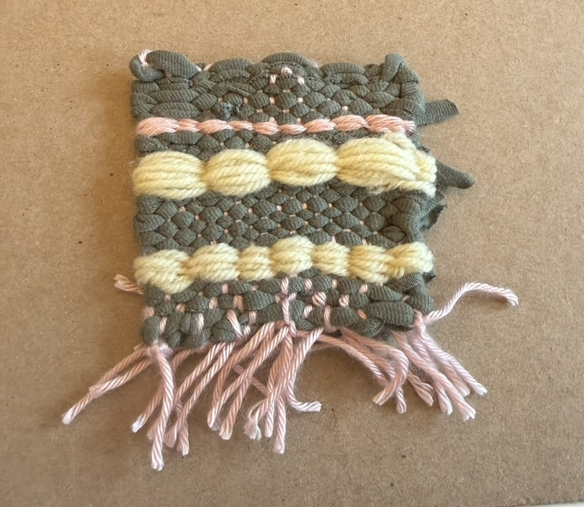
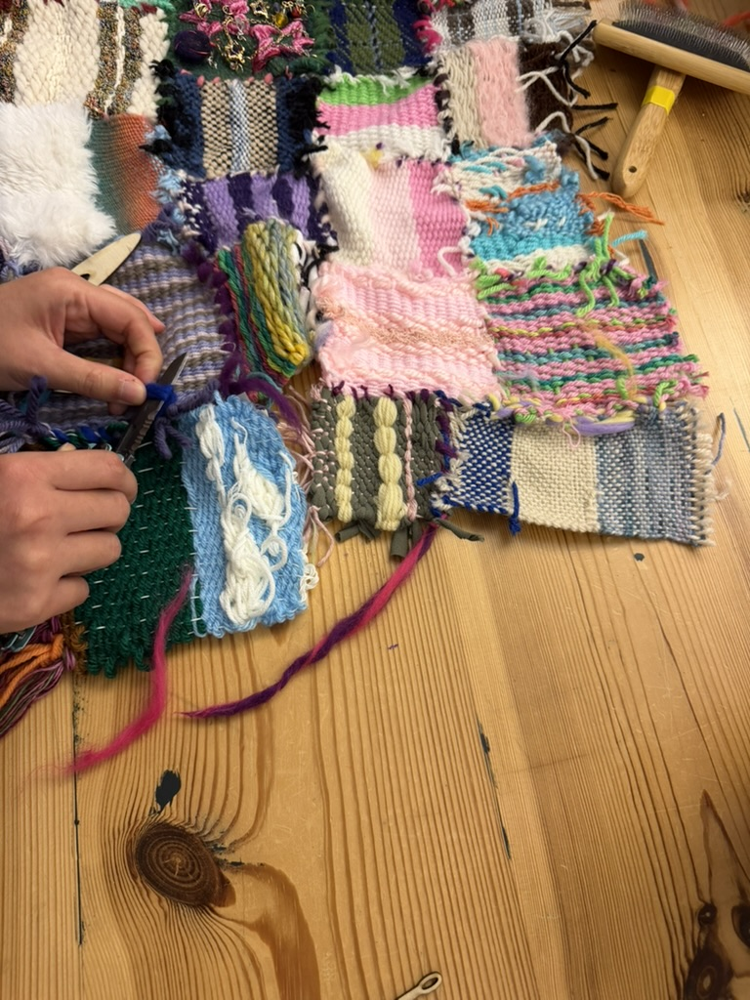
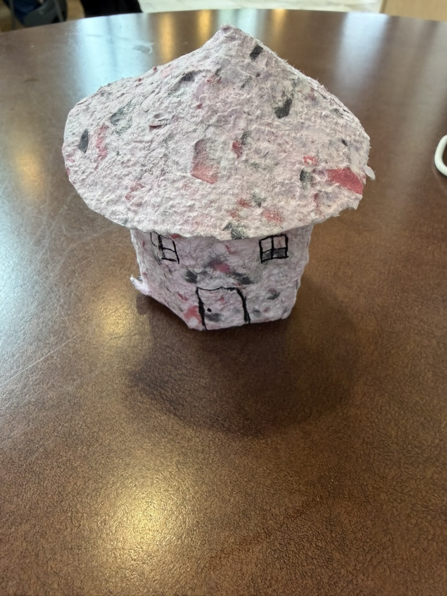
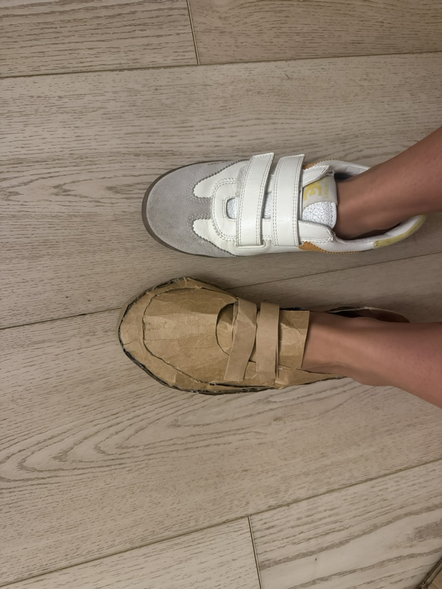
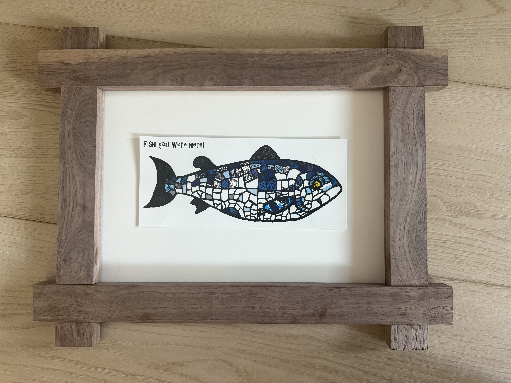

Julia's Materials Studies & Practice Documentation Blog
Assignments
Assignment 6: Weave It To Me!
September 30, 2026
This was my first time weaving and I found it to be a lot of fun.
I made my own t-shirt yarn for the project and I think it came out pretty good.
I honestly think that it was very calming and relaxing to do, until I had to take it off the loom.
I was so confused how to do it and kinda just said a prayer and hoped it would work out. Making the thread to stitch them together was also a learning curve, I realized that you have to have the fibers really thin if you want skinny threads.


Assignment 5: Make Paper, Tigers!
September 28, 2026
I used the paper pulp that you made for the demonstration beacuse no one wante to use it and thought it was wasteful.
So i used that for making my paper. I did noticed that since the paper pulp wasn't super fine it was harder to make an even sheet.
I orginally wanted to make an oragami frog from the paper, but it came out super thick and not foldable without tearing. So I decided
to make a sturcture that utalized cylindrical shapes, so that the paper would not rip.

Assignment 4: Cardboard Couture: Shoes
September 16, 2026
Making the shoes was a lot more work than I thought it would be. To create the pattern I kinda free balled it while looking
at an actual shoe. I don't think I got the proportions quite right, but it was a good learning experience. One of the reasens it is
off is due to having to fit my wide toes into the shoe. I would say I have a pretty narrrow foot exept for my wide toes.
So that was a challenege to get the shoe to actully be wearable. Not sure how long they will last, like deffinetly could not walk
a mile in my shoes but I think they'll make it the length of the classroom.

Assignment 3: Joinery Exercise Part 2
September 9, 2026
When building the frame I found it easier than the first time, but I am no where near close to being a woodworker.
I still need to work on my measuring and cutting skills, but I can see improvement in my patience and attention to detail.
I found that setting the height of the table saw to correctly make the lap joints was very hard. The first cut I made was way to deep but I think I was able to salvage it.
I think it can out pretty good from the front but just don't look to closely at the sides and back.
For my image I decided to put a postcard that I got from Belfast last year, I think I'm going to hang the frame in my room
or add it to the living room with all my other ctd projects (my roommates love it).

Assignment 2: Joinery Exercise Part 1
September 2, 2026
When building the frame I found it pretty difficult. I had never really done much woodworking so I had to take my time and be patient.
I think that if I was to do it again I would have taken more time to measure and make sure everything was perfect.
I would also make sure that when I'm using the handsaw I am being more careful and precise with my cuts, because
they all were kinda crooked which made the lap joints not completely flush.
Assignment 1: Favorite Object
August 26, 2026
One of my favorite objects I have here in Boulder is my skinny wine glass.
I got it at Good Will and it was only $2.99. I love it because it is so skinny and makes me feel fancy when I drink out of it.
It makes drinks taste better and allows the users to appreciate the flavors more deeply.
I love how skinny it is and makes me feel skinny when drinking from it. The glass can also hold a lot of beverage, I would say maybe half a wine bottle.
The material it is make out of is glass, and is very thin.
The glass might honestly be crystal with how thin it is. I wish I knew what brand it is to buy another one, so others can enjoy the feeling to drink from it.
I hope that even though its really thin, it doesn't break easily and will last forever.